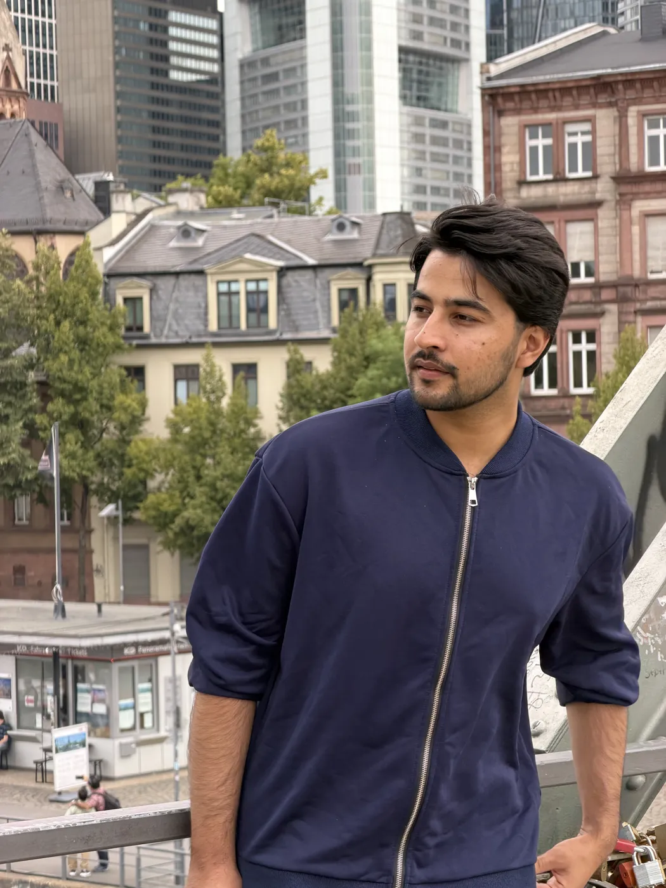
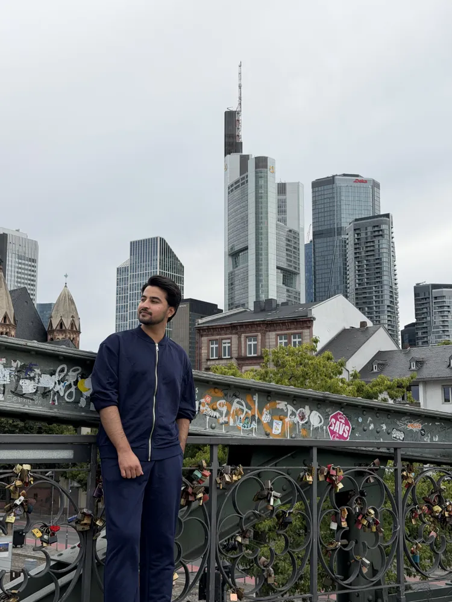
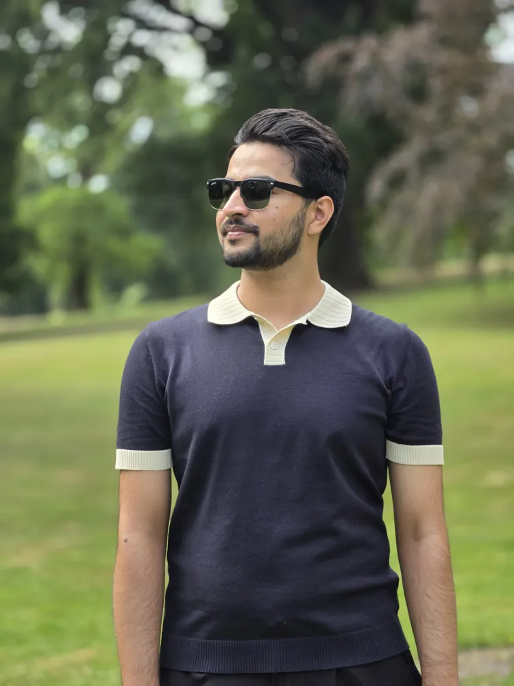
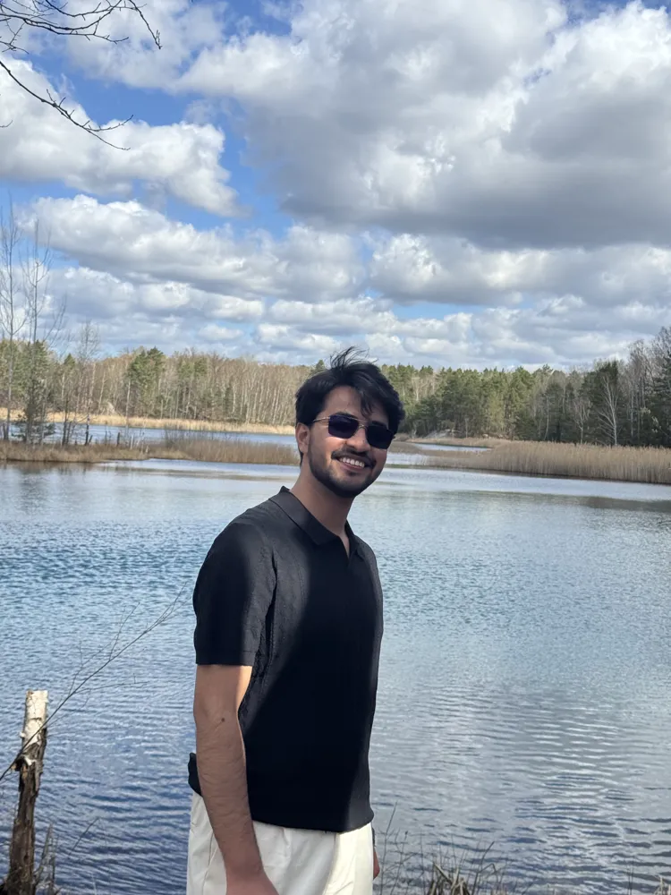
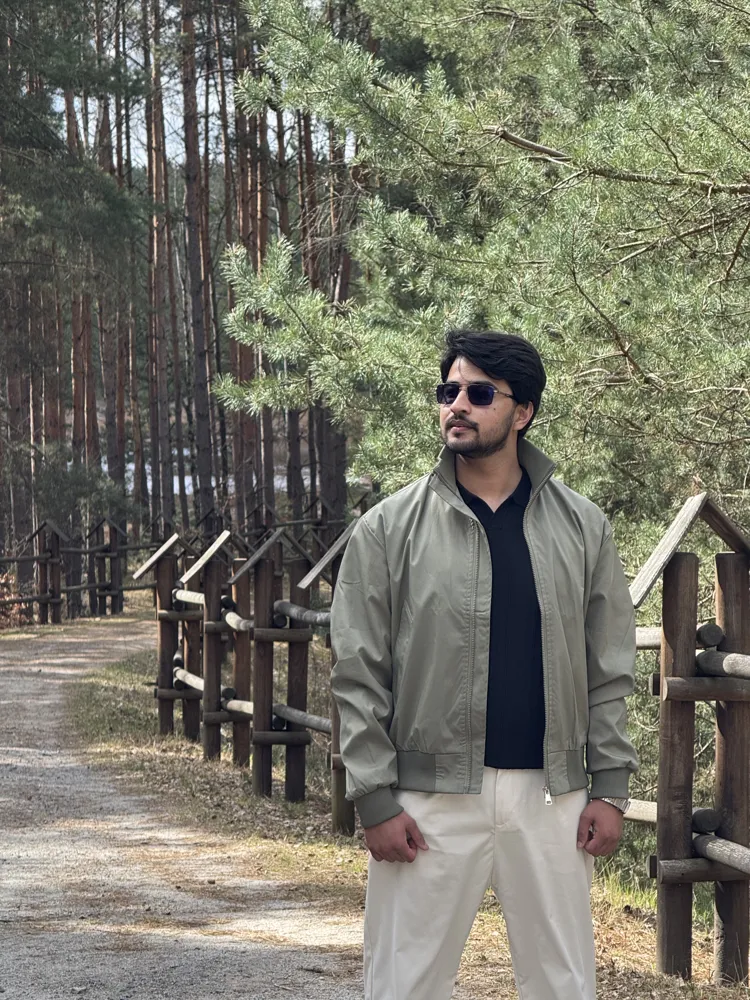
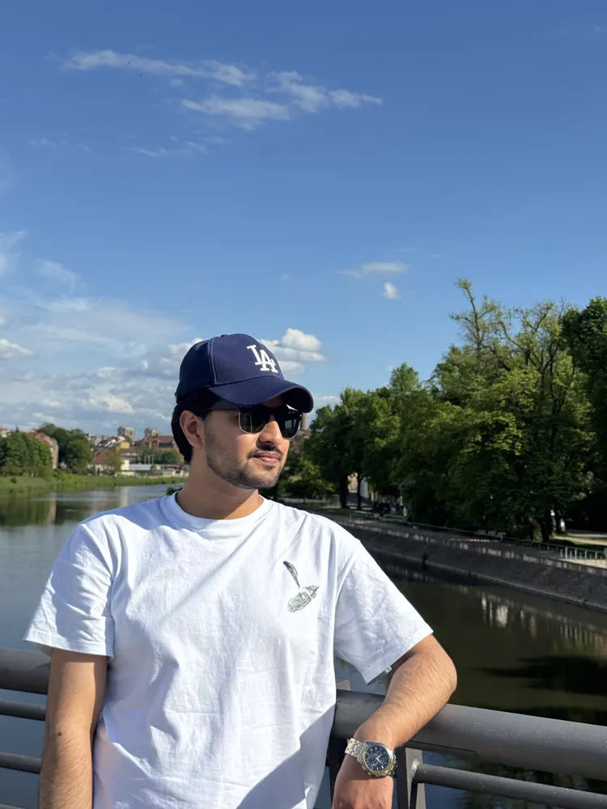

Working student
Fraunhofer IEE
Building classification from aerial imagery across Bavaria.
Open to CV / AI engineering roles · Germany
I'm Assad, an AI engineer in Cottbus. I build vision systems that run on real data: buildings from aerial imagery, people and cars in video, models small enough for edge hardware.

I learned machine learning on forecasting and dashboards. Now I point it at the physical world. At Fraunhofer IEE I classify buildings from aerial imagery across Bavaria. At BTU I measure what video AI really costs on a small chip. Every model I ship has to survive real data, not just a demo.

Now
Working student
Building classification from aerial imagery across Bavaria.
HiWi · MeReVeS
Power and performance benchmarking of video workloads on an NXP i.MX8M Plus.
Master's thesis
AI-supported building detection and classification from aerial imagery.
Selected work
Counts objects crossing a line and measures zone occupancy in video, using detection and tracking. Runs as a CLI or a small API. First Kaggle run: a 735-frame clip in 25 s, model load included.
Python · Ultralytics YOLO · Tracking · CLI / API
Helps expats understand official German letters: plain-language summaries, deadline extraction, EN↔DE translation and editable draft replies, exported to Word or PDF.
LangChain · OpenAI API · HuggingFace · Streamlit
Forecasting pipeline for household and industrial energy use. Benchmarked ARIMA, XGBoost and LSTM and ensembled the best performers to reach 85% forecasting accuracy.
XGBoost · LSTM · ARIMA · TensorFlow · scikit-learn
Image classifier built as a modular, config-driven pipeline: entities, config manager, components and pipeline stages, tracked with DVC so every run is reproducible.
Python · Deep Learning · DVC · YAML configs
YOLOv8 with OpenCV for license plate detection on live video streams, tested across different lighting and weather, packaged in Docker for inference.
YOLOv8 · OpenCV · PyTorch · Docker
End-to-end analytics: SQL CTEs and Python EDA for customer segmentation, served as an interactive Power BI dashboard with live KPIs.
SQL · Python · Pandas · Power BI
Experience
Now
Building classification from aerial imagery across Bavaria.
Now
Power and performance benchmarking of video workloads on edge hardware (NXP i.MX8M Plus).
Oct 2025 – Jan 2026
Multi-agent workflows with LangChain. Containerized backends with Docker, FastAPI and Kubernetes (35% better scalability). CI/CD that cut deployment time by 50%.
Apr 2023 – Feb 2024
Production forecasting models (XGBoost, LSTM, ARIMA) at 85% accuracy. Cloud integration that cut deployment time by 40%.
Jul 2022 – Feb 2023
Churn models that reduced customer churn by 12% and improved retention by 15%.

About
I grew up in Haripur, Pakistan, studied computer science there (B.Sc., GPA 3.79) and worked as a data scientist and ML engineer before moving to Germany for my M.Sc. in Artificial Intelligence at BTU Cottbus-Senftenberg.
Today computer vision is my core. Agentic AI, generative AI and data science are the tools around it. I care about work that ships, has real numbers behind it, and that someone else can run.
PyTorch · YOLO / Ultralytics · OpenCV · ONNX · tracking · aerial imagery
scikit-learn · XGBoost · LSTM · LangChain · RAG · OpenAI API · HuggingFace
Python · SQL · Docker · Kubernetes · FastAPI · GitHub Actions · DVC
English C1 · German B1 · Urdu native
2024 – 2027
BTU Cottbus-Senftenberg
2020 – 2024
University of Haripur · thesis on real-time helmet and license plate violation detection



Contact
I'm open to computer vision and AI engineering roles in Germany: Cottbus, Berlin, Munich or remote.
assadkhurshid91@gmail.com ↗